1. eval_noapril:1775201414728017664
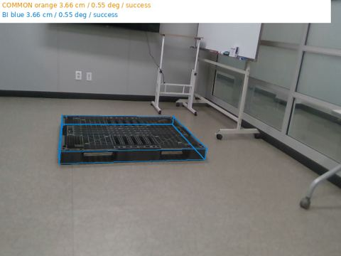
COMMON 3.66 cm / 0.55 deg / success
BI 3.66 cm / 0.55 deg / success
Whole-pose errors: center cm / C2 rotation deg. Orange COMMON, blue BI. Automatic states are predictions. Solid wireframes are model projections; selected cyan points and magenta normal lines are image observations. S/O/T/U are excluded. Numeric links include all13 systems and all6 learned outputs.
Korean report · all populations table

COMMON 3.66 cm / 0.55 deg / success
BI 3.66 cm / 0.55 deg / success
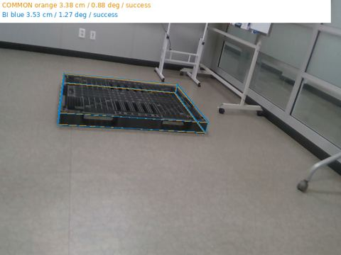
COMMON 3.38 cm / 0.88 deg / success
BI 3.53 cm / 1.27 deg / success
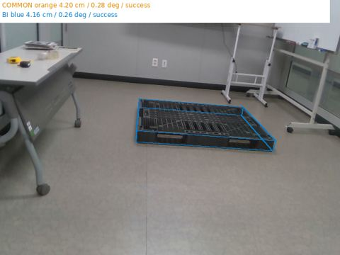
COMMON 4.20 cm / 0.28 deg / success
BI 4.16 cm / 0.26 deg / success
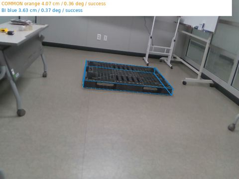
COMMON 4.07 cm / 0.36 deg / success
BI 3.63 cm / 0.37 deg / success
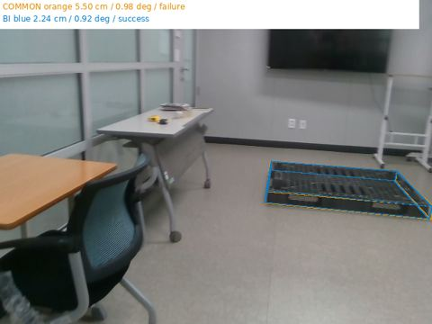
COMMON 5.50 cm / 0.98 deg / failure
BI 2.24 cm / 0.92 deg / success
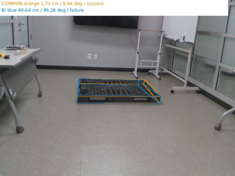
COMMON 1.73 cm / 0.64 deg / success
BI 40.64 cm / 89.28 deg / failure
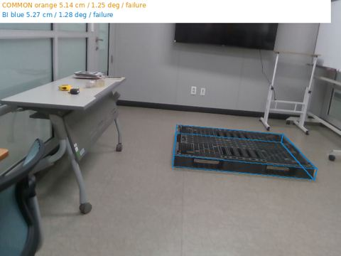
COMMON 5.14 cm / 1.25 deg / failure
BI 5.27 cm / 1.28 deg / failure
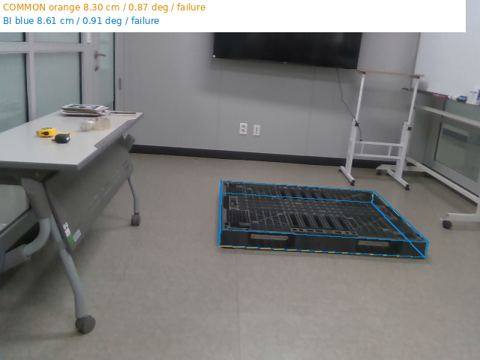
COMMON 8.30 cm / 0.87 deg / failure
BI 8.61 cm / 0.91 deg / failure
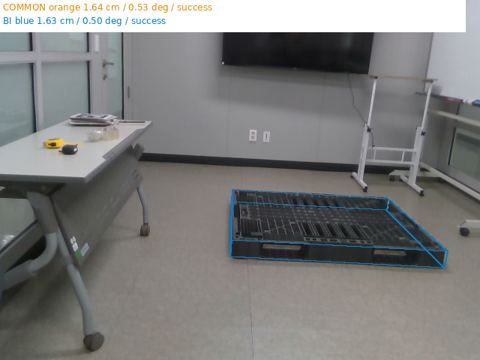
COMMON 1.64 cm / 0.53 deg / success
BI 1.63 cm / 0.50 deg / success
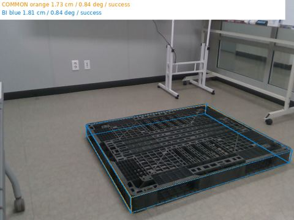
COMMON 1.73 cm / 0.84 deg / success
BI 1.81 cm / 0.84 deg / success
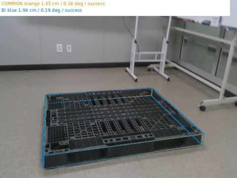
COMMON 1.35 cm / 0.16 deg / success
BI 1.94 cm / 0.19 deg / success
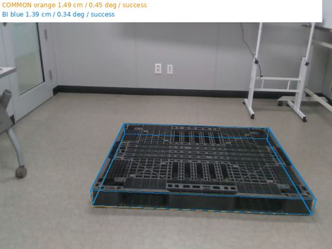
COMMON 1.49 cm / 0.45 deg / success
BI 1.39 cm / 0.34 deg / success
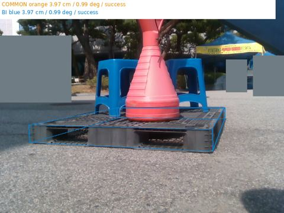
COMMON 3.97 cm / 0.99 deg / success
BI 3.97 cm / 0.99 deg / success
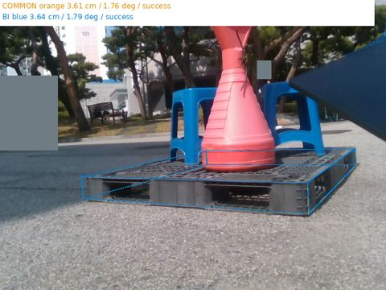
COMMON 3.61 cm / 1.76 deg / success
BI 3.64 cm / 1.79 deg / success
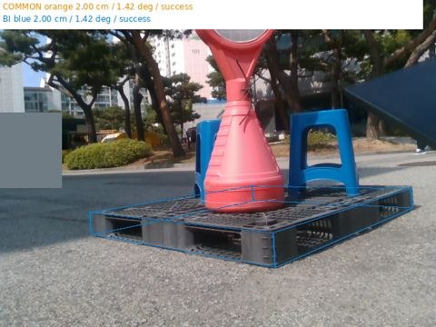
COMMON 2.00 cm / 1.42 deg / success
BI 2.00 cm / 1.42 deg / success
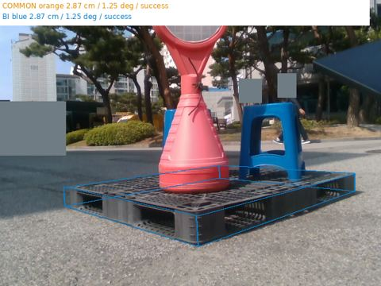
COMMON 2.87 cm / 1.25 deg / success
BI 2.87 cm / 1.25 deg / success
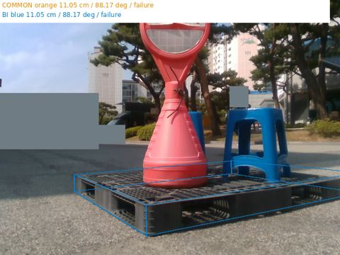
COMMON 11.05 cm / 88.17 deg / failure
BI 11.05 cm / 88.17 deg / failure
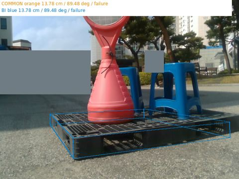
COMMON 13.78 cm / 89.48 deg / failure
BI 13.78 cm / 89.48 deg / failure
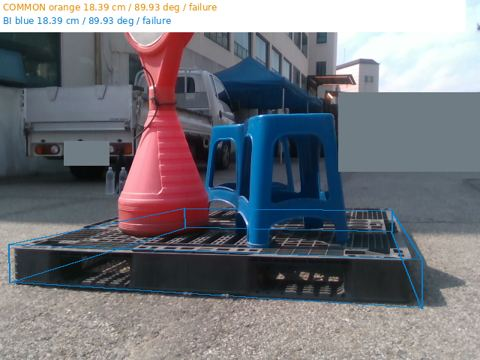
COMMON 18.39 cm / 89.93 deg / failure
BI 18.39 cm / 89.93 deg / failure
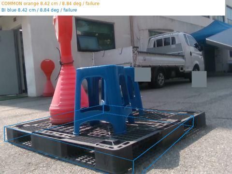
COMMON 8.42 cm / 8.84 deg / failure
BI 8.42 cm / 8.84 deg / failure
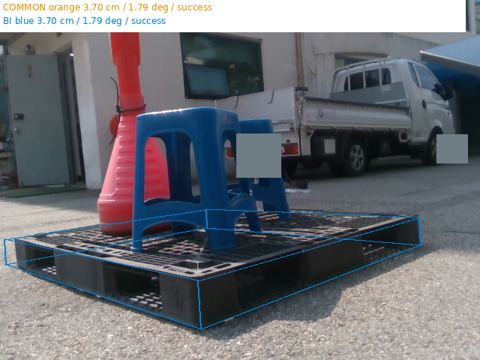
COMMON 3.70 cm / 1.79 deg / success
BI 3.70 cm / 1.79 deg / success
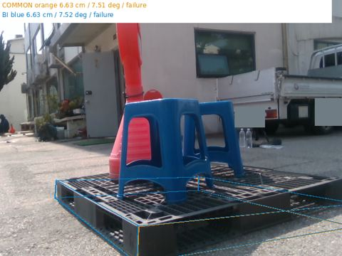
COMMON 6.63 cm / 7.51 deg / failure
BI 6.63 cm / 7.52 deg / failure
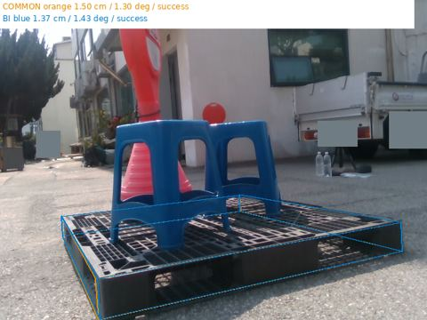
COMMON 1.50 cm / 1.30 deg / success
BI 1.37 cm / 1.43 deg / success
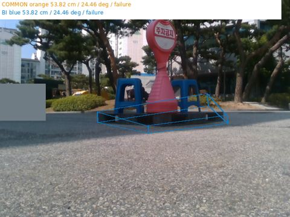
COMMON 53.82 cm / 24.46 deg / failure
BI 53.82 cm / 24.46 deg / failure
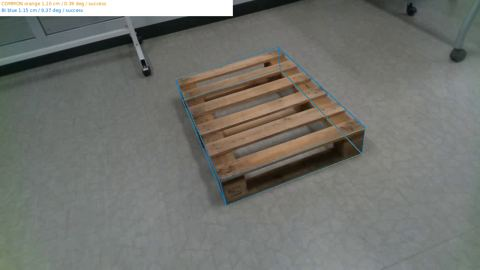
COMMON 1.10 cm / 0.39 deg / success
BI 1.15 cm / 0.37 deg / success
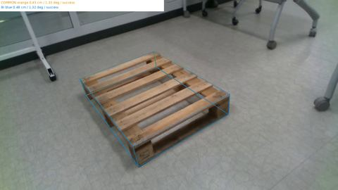
COMMON 0.45 cm / 1.33 deg / success
BI 0.48 cm / 1.32 deg / success
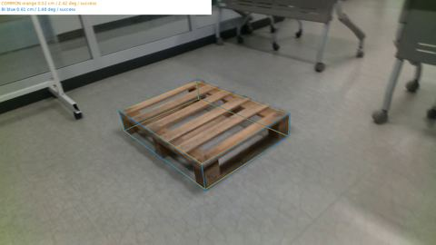
COMMON 0.52 cm / 2.42 deg / success
BI 0.61 cm / 1.48 deg / success
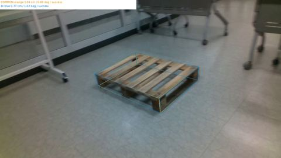
COMMON 1.04 cm / 0.69 deg / success
BI 0.77 cm / 1.02 deg / success
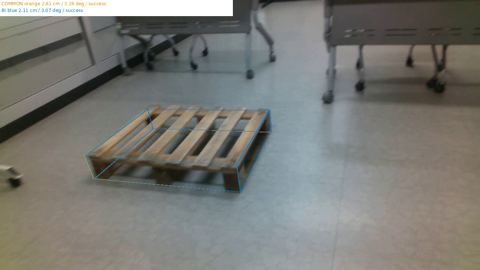
COMMON 2.61 cm / 3.19 deg / success
BI 2.11 cm / 3.07 deg / success
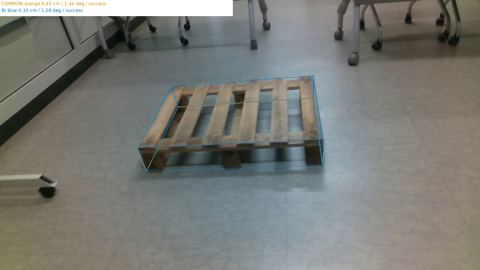
COMMON 0.45 cm / 1.34 deg / success
BI 0.33 cm / 1.28 deg / success
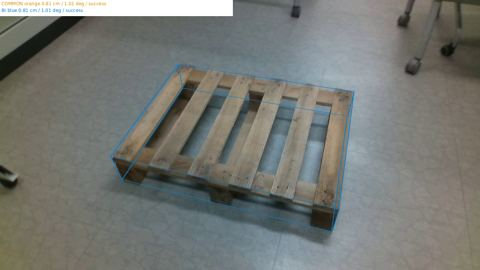
COMMON 0.81 cm / 1.01 deg / success
BI 0.81 cm / 1.01 deg / success
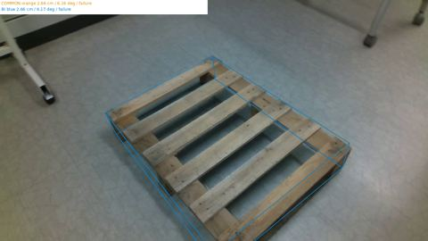
COMMON 2.66 cm / 6.16 deg / failure
BI 2.66 cm / 6.17 deg / failure
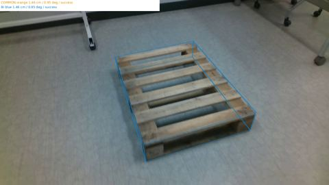
COMMON 1.46 cm / 0.95 deg / success
BI 1.46 cm / 0.95 deg / success
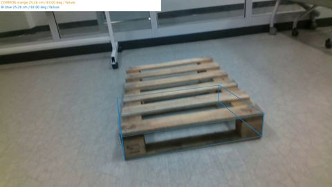
COMMON 25.26 cm / 83.00 deg / failure
BI 25.26 cm / 83.00 deg / failure
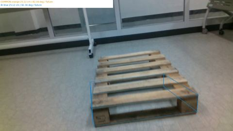
COMMON 25.12 cm / 82.34 deg / failure
BI 25.12 cm / 82.34 deg / failure
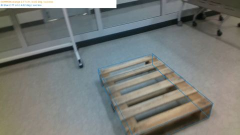
COMMON 2.77 cm / 4.02 deg / success
BI 2.77 cm / 4.02 deg / success
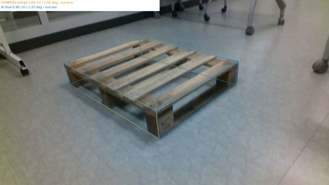
COMMON 1.06 cm / 1.02 deg / success
BI 0.89 cm / 1.35 deg / success
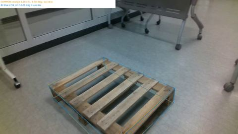
COMMON 3.26 cm / 4.56 deg / success
BI 2.59 cm / 4.21 deg / success
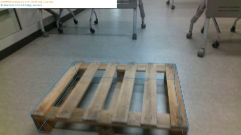
COMMON 0.21 cm / 0.93 deg / success
BI 0.21 cm / 0.93 deg / success
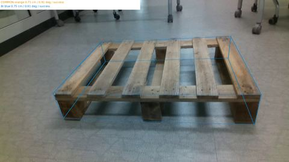
COMMON 0.75 cm / 0.91 deg / success
BI 0.75 cm / 0.91 deg / success
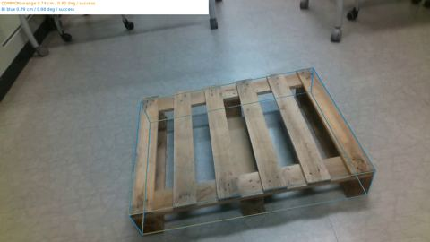
COMMON 0.74 cm / 0.80 deg / success
BI 0.79 cm / 0.98 deg / success
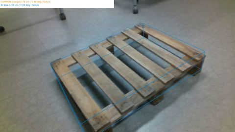
COMMON 2.78 cm / 7.99 deg / failure
BI 2.78 cm / 7.99 deg / failure
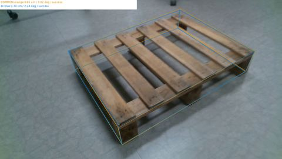
COMMON 0.85 cm / 3.02 deg / success
BI 0.74 cm / 2.24 deg / success
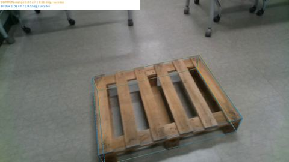
COMMON 1.07 cm / 0.16 deg / success
BI 1.08 cm / 0.92 deg / success
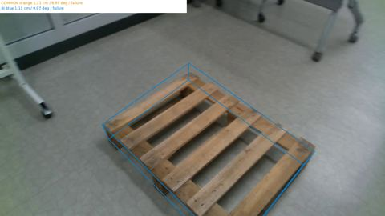
COMMON 1.11 cm / 9.97 deg / failure
BI 1.11 cm / 9.97 deg / failure
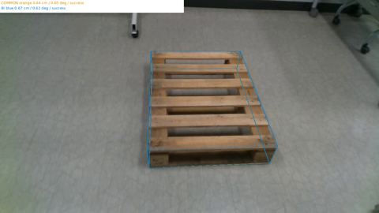
COMMON 0.64 cm / 0.65 deg / success
BI 0.67 cm / 0.62 deg / success
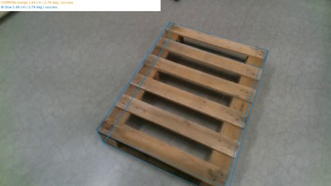
COMMON 1.69 cm / 2.79 deg / success
BI 1.69 cm / 2.79 deg / success
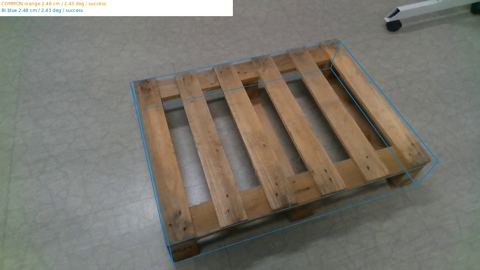
COMMON 2.48 cm / 2.43 deg / success
BI 2.48 cm / 2.43 deg / success
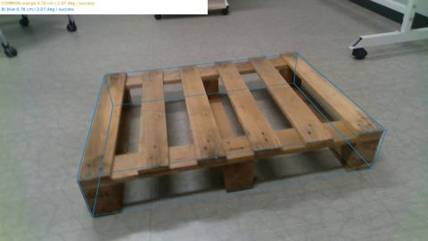
COMMON 0.78 cm / 2.07 deg / success
BI 0.78 cm / 2.07 deg / success
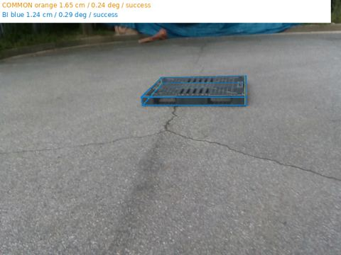
COMMON 1.65 cm / 0.24 deg / success
BI 1.24 cm / 0.29 deg / success
COMMON 0.84 cm / 1.00 deg / success
BI 0.96 cm / 1.06 deg / success
COMMON 2.71 cm / 0.51 deg / success
BI 3.59 cm / 0.56 deg / success
COMMON 0.56 cm / 0.49 deg / success
BI 0.89 cm / 0.51 deg / success
COMMON 4.08 cm / 1.19 deg / success
BI 4.05 cm / 1.20 deg / success
COMMON 2.35 cm / 1.22 deg / success
BI 1.24 cm / 1.20 deg / success
COMMON 1.36 cm / 1.20 deg / success
BI 1.29 cm / 1.32 deg / success
COMMON 1.07 cm / 0.74 deg / success
BI 1.08 cm / 0.74 deg / success
COMMON 3.10 cm / 0.79 deg / success
BI 2.61 cm / 0.79 deg / success
COMMON 1.05 cm / 0.71 deg / success
BI 1.05 cm / 0.71 deg / success
COMMON 1.11 cm / 0.58 deg / success
BI 1.11 cm / 0.58 deg / success
COMMON 1.40 cm / 0.49 deg / success
BI 1.94 cm / 0.27 deg / success
COMMON 3.65 cm / 0.55 deg / success
BI 3.24 cm / 0.50 deg / success
COMMON 5.34 cm / 1.09 deg / failure
BI 4.91 cm / 1.08 deg / success
COMMON 1.07 cm / 1.10 deg / success
BI 0.93 cm / 1.27 deg / success
COMMON 1.50 cm / 0.44 deg / success
BI 2.03 cm / 0.54 deg / success
COMMON 3.59 cm / 0.52 deg / success
BI 3.59 cm / 0.52 deg / success
COMMON 4.37 cm / 0.54 deg / success
BI 4.32 cm / 0.53 deg / success
COMMON 0.69 cm / 0.94 deg / success
BI 0.68 cm / 1.00 deg / success
COMMON 3.06 cm / 1.65 deg / success
BI 19.31 cm / 79.76 deg / failure
COMMON 2.15 cm / 1.83 deg / success
BI 2.04 cm / 1.77 deg / success
COMMON 25.00 cm / 14.66 deg / failure
BI 25.00 cm / 14.66 deg / failure
COMMON 24.08 cm / 85.25 deg / failure
BI 24.10 cm / 85.26 deg / failure
COMMON 6.80 cm / 0.84 deg / failure
BI 6.80 cm / 0.84 deg / failure
COMMON 0.34 cm / 0.37 deg / success
BI 0.54 cm / 0.39 deg / success
COMMON 2.71 cm / 1.17 deg / success
BI 2.71 cm / 1.17 deg / success
COMMON 11.79 cm / 3.27 deg / failure
BI 11.75 cm / 3.26 deg / failure
COMMON 5.37 cm / 0.79 deg / failure
BI 5.37 cm / 0.79 deg / failure
COMMON 2.06 cm / 0.56 deg / success
BI 0.96 cm / 0.51 deg / success
COMMON 2.67 cm / 1.05 deg / success
BI 1.25 cm / 1.20 deg / success
COMMON 6.64 cm / 0.91 deg / failure
BI 6.11 cm / 0.75 deg / failure
COMMON 5.60 cm / 0.57 deg / failure
BI 5.64 cm / 0.62 deg / failure
COMMON 1.57 cm / 0.47 deg / success
BI 2.06 cm / 0.42 deg / success
COMMON 70.30 cm / 3.60 deg / failure
BI 70.30 cm / 3.60 deg / failure
COMMON 3.80 cm / 0.67 deg / success
BI 4.14 cm / 0.71 deg / success
COMMON 2.75 cm / 0.39 deg / success
BI 2.86 cm / 0.39 deg / success
COMMON 3.45 cm / 0.57 deg / success
BI 3.20 cm / 0.55 deg / success
COMMON 6.93 cm / 1.55 deg / failure
BI 6.78 cm / 1.49 deg / failure
COMMON 6.60 cm / 0.78 deg / failure
BI 6.58 cm / 0.77 deg / failure
COMMON 5.06 cm / 0.98 deg / failure
BI 5.06 cm / 0.98 deg / failure
COMMON 25.07 cm / 74.43 deg / failure
BI 25.07 cm / 74.43 deg / failure
COMMON 36.32 cm / 8.71 deg / failure
BI 36.32 cm / 8.71 deg / failure
COMMON 14.84 cm / 9.24 deg / failure
BI 14.84 cm / 9.24 deg / failure
COMMON 3.21 cm / 1.24 deg / success
BI 52.20 cm / 81.89 deg / failure
COMMON 69.57 cm / 86.41 deg / failure
BI 69.57 cm / 86.41 deg / failure
COMMON 4.63 cm / 4.77 deg / success
BI 3.39 cm / 3.77 deg / success
COMMON 12.37 cm / 5.52 deg / failure
BI 12.53 cm / 5.46 deg / failure
COMMON 5.43 cm / 1.50 deg / failure
BI 2.61 cm / 1.02 deg / success
COMMON 1.66 cm / 0.91 deg / success
BI 1.87 cm / 1.26 deg / success
COMMON 6.36 cm / 1.11 deg / failure
BI 6.36 cm / 1.11 deg / failure
COMMON 2.76 cm / 1.08 deg / success
BI 2.76 cm / 1.08 deg / success
COMMON 13.02 cm / 2.10 deg / failure
BI 13.02 cm / 2.10 deg / failure
COMMON 7.39 cm / 1.99 deg / failure
BI 7.92 cm / 2.53 deg / failure
COMMON 5.95 cm / 1.74 deg / failure
BI 5.17 cm / 1.81 deg / failure
COMMON 89.63 cm / 88.29 deg / failure
BI 52.01 cm / 88.71 deg / failure
COMMON 15.35 cm / 85.06 deg / failure
BI 16.53 cm / 84.98 deg / failure
COMMON 4.86 cm / 0.95 deg / success
BI 4.77 cm / 1.01 deg / success
COMMON 3.20 cm / 2.96 deg / success
BI 3.20 cm / 2.96 deg / success
COMMON 1.58 cm / 1.48 deg / success
BI 1.35 cm / 1.62 deg / success
COMMON 68.73 cm / 78.69 deg / failure
BI 1.90 cm / 0.86 deg / success
COMMON 76.54 cm / 76.47 deg / failure
BI 71.13 cm / 76.84 deg / failure
COMMON 2.46 cm / 1.09 deg / success
BI 2.35 cm / 0.93 deg / success
COMMON 33.61 cm / 87.42 deg / failure
BI 33.61 cm / 87.42 deg / failure
COMMON 0.85 cm / 0.54 deg / success
BI 0.85 cm / 0.54 deg / success
COMMON 5.48 cm / 6.32 deg / failure
BI 5.48 cm / 6.32 deg / failure
COMMON 0.28 cm / 0.77 deg / success
BI 0.22 cm / 0.69 deg / success
COMMON 0.51 cm / 2.39 deg / success
BI 0.51 cm / 2.39 deg / success
COMMON 2.70 cm / 0.44 deg / success
BI 2.70 cm / 0.44 deg / success
COMMON 2.26 cm / 1.32 deg / success
BI 2.68 cm / 1.85 deg / success
COMMON 2.61 cm / 2.88 deg / success
BI 2.61 cm / 2.88 deg / success
COMMON 7.69 cm / 1.35 deg / failure
BI 7.69 cm / 1.35 deg / failure
COMMON 12.24 cm / 75.28 deg / failure
BI 12.24 cm / 75.28 deg / failure
COMMON 6.57 cm / 1.35 deg / failure
BI 6.57 cm / 1.35 deg / failure
COMMON 14.73 cm / 87.42 deg / failure
BI 14.73 cm / 87.42 deg / failure
COMMON 1.77 cm / 1.16 deg / success
BI 1.67 cm / 1.10 deg / success
COMMON 1.29 cm / 1.76 deg / success
BI 1.29 cm / 1.76 deg / success
COMMON 25.85 cm / 1.33 deg / failure
BI 25.85 cm / 1.33 deg / failure
COMMON 11.25 cm / 2.04 deg / failure
BI 11.25 cm / 2.04 deg / failure
COMMON 5.92 cm / 2.08 deg / failure
BI 5.92 cm / 2.08 deg / failure
COMMON 20.24 cm / 5.44 deg / failure
BI 20.24 cm / 5.44 deg / failure
COMMON 1.08 cm / 1.56 deg / success
BI 1.08 cm / 1.57 deg / success
COMMON 1.92 cm / 0.23 deg / success
BI 1.14 cm / 0.25 deg / success
COMMON 1.06 cm / 3.28 deg / success
BI 1.06 cm / 3.28 deg / success
COMMON 1.43 cm / 1.30 deg / success
BI 1.22 cm / 1.37 deg / success
COMMON 1.51 cm / 1.80 deg / success
BI 1.51 cm / 1.80 deg / success
COMMON 125.19 cm / 84.74 deg / failure
BI 125.19 cm / 84.74 deg / failure
COMMON 3.99 cm / 1.11 deg / success
BI 4.76 cm / 1.34 deg / success
COMMON 1.35 cm / 1.29 deg / success
BI 1.35 cm / 1.29 deg / success
COMMON 79.30 cm / 86.95 deg / failure
BI 79.30 cm / 86.95 deg / failure
COMMON 4.68 cm / 0.17 deg / success
BI 3.29 cm / 0.80 deg / success
COMMON 0.81 cm / 78.29 deg / failure
BI 0.81 cm / 78.29 deg / failure
COMMON 1.11 cm / 1.55 deg / success
BI 1.17 cm / 1.47 deg / success
COMMON 20.74 cm / 64.85 deg / failure
BI 7.80 cm / 7.33 deg / failure
COMMON 2.32 cm / 0.61 deg / success
BI 1.84 cm / 0.81 deg / success
COMMON 0.80 cm / 3.43 deg / success
BI 1.09 cm / 3.35 deg / success
COMMON 1.75 cm / 2.66 deg / success
BI 1.16 cm / 2.42 deg / success
COMMON 1.49 cm / 1.71 deg / success
BI 1.47 cm / 1.64 deg / success
COMMON 1.77 cm / 2.58 deg / success
BI 1.77 cm / 2.58 deg / success
COMMON 2.36 cm / 1.19 deg / success
BI 2.01 cm / 1.20 deg / success
COMMON 1.21 cm / 5.05 deg / failure
BI 1.21 cm / 5.05 deg / failure
COMMON 3.01 cm / 1.33 deg / success
BI 3.01 cm / 1.33 deg / success
COMMON 0.67 cm / 0.84 deg / success
BI 0.47 cm / 1.04 deg / success
COMMON 3.10 cm / 0.36 deg / success
BI 3.10 cm / 0.36 deg / success
COMMON 2.35 cm / 3.11 deg / success
BI 2.35 cm / 3.11 deg / success
COMMON 6.79 cm / 1.56 deg / failure
BI 6.79 cm / 1.56 deg / failure
COMMON 0.84 cm / 0.95 deg / success
BI 0.87 cm / 0.91 deg / success
COMMON 8.64 cm / 0.72 deg / failure
BI 8.64 cm / 0.72 deg / failure
COMMON 3.39 cm / 0.36 deg / success
BI 3.39 cm / 0.36 deg / success
COMMON 1.93 cm / 3.69 deg / success
BI 1.93 cm / 3.69 deg / success
COMMON 0.97 cm / 1.63 deg / success
BI 0.99 cm / 1.42 deg / success
COMMON 0.51 cm / 1.69 deg / success
BI 0.75 cm / 1.60 deg / success
COMMON 1.25 cm / 2.31 deg / success
BI 1.97 cm / 2.59 deg / success
COMMON 37.63 cm / 127.74 deg / failure
BI 37.63 cm / 127.74 deg / failure
COMMON 8.28 cm / 4.48 deg / failure
BI 7.33 cm / 2.91 deg / failure
COMMON 21.25 cm / 11.43 deg / failure
BI 20.64 cm / 10.41 deg / failure
COMMON 4.24 cm / 1.55 deg / success
BI 8.11 cm / 5.19 deg / failure
COMMON 2.16 cm / 1.05 deg / success
BI 2.44 cm / 1.18 deg / success
COMMON 4.21 cm / 5.11 deg / failure
BI 4.13 cm / 5.15 deg / failure
COMMON 98.22 cm / 81.74 deg / failure
BI 102.58 cm / 81.04 deg / failure
COMMON 48.46 cm / 4.26 deg / failure
BI 76.59 cm / 6.80 deg / failure
COMMON 155.06 cm / 85.33 deg / failure
BI 154.91 cm / 85.33 deg / failure
COMMON 45.50 cm / 5.79 deg / failure
BI 50.11 cm / 6.05 deg / failure
COMMON 203.79 cm / 90.13 deg / failure
BI 15.96 cm / 8.65 deg / failure
COMMON 174.76 cm / 81.69 deg / failure
BI 174.76 cm / 81.69 deg / failure
COMMON 163.82 cm / 83.89 deg / failure
BI 163.82 cm / 83.89 deg / failure
COMMON 290.23 cm / 86.05 deg / failure
BI 290.23 cm / 86.05 deg / failure
COMMON 12.28 cm / 1.53 deg / failure
BI 17.82 cm / 0.61 deg / failure
COMMON 31.06 cm / 3.21 deg / failure
BI 31.06 cm / 3.21 deg / failure
COMMON 13.85 cm / 83.03 deg / failure
BI 13.85 cm / 83.03 deg / failure
COMMON 40.23 cm / 1.67 deg / failure
BI 40.23 cm / 1.67 deg / failure
COMMON 32.65 cm / 85.65 deg / failure
BI 32.65 cm / 85.65 deg / failure
COMMON 12.46 cm / 8.43 deg / failure
BI 12.46 cm / 8.43 deg / failure
COMMON 39.22 cm / 86.74 deg / failure
BI 39.22 cm / 86.74 deg / failure
COMMON 3.75 cm / 6.16 deg / failure
BI 3.75 cm / 6.16 deg / failure
COMMON 10.64 cm / 1.71 deg / failure
BI 10.64 cm / 1.71 deg / failure
COMMON 89.03 cm / 89.25 deg / failure
BI 89.03 cm / 89.25 deg / failure
COMMON 21.33 cm / 5.39 deg / failure
BI 21.33 cm / 5.39 deg / failure
COMMON 1.39 cm / 3.03 deg / success
BI 1.39 cm / 3.03 deg / success
COMMON 23.88 cm / 2.14 deg / failure
BI 23.88 cm / 2.14 deg / failure
COMMON 74.20 cm / 84.26 deg / failure
BI 74.20 cm / 84.26 deg / failure
COMMON 5.30 cm / 14.84 deg / failure
BI 6.81 cm / 15.96 deg / failure
COMMON 34.30 cm / 6.49 deg / failure
BI 40.03 cm / 5.54 deg / failure
COMMON 14.34 cm / 88.52 deg / failure
BI 15.34 cm / 88.52 deg / failure